This package contains connectors and interfaces (partial models) for analog electrical components. The partial models contain typical combinations of pins, and internal variables which are often used. Furthermode, the thermal heat port is in this package which can be included by inheritance.
Extends from Modelica.Icons.InterfacesPackage (Icon for packages containing interfaces).
| Name | Description |
|---|---|
| Pin of an electrical component | |
| Positive pin of an electric component | |
| Negative pin of an electric component | |
| Component with two electrical pins | |
| Component with two electrical pins p and n and current i from p to n | |
| Component with two electrical ports, including current | |
| Partial model to include a conditional HeatPort in order to describe the power loss via a thermal network | |
| Base class to measure the absolute value of a pin variable | |
| 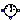 RelativeSensor | Base class to measure a relative variable between two pins |
| 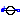 VoltageSource | Interface for voltage sources |
| 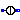 CurrentSource | Interface for current sources |
 Modelica.Electrical.Analog.Interfaces.Pin
Modelica.Electrical.Analog.Interfaces.Pin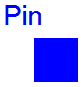
Pin is the basic electric connector. It includes the voltage which consists between the pin and the ground node. The ground node is the node of (any) ground device (Modelica.Electrical.Basic.Ground). Furthermore, the pin includes the current, which is considered to be positive if it is flowing at the pin into the device.
| Type | Name | Description |
|---|---|---|
| Voltage | v | Potential at the pin [V] |
| flow Current | i | Current flowing into the pin [A] |
connector Pin "Pin of an electrical component" Modelica.SIunits.Voltage v "Potential at the pin"; flow Modelica.SIunits.Current i "Current flowing into the pin";end Pin;
Modelica.Electrical.Analog.Interfaces.PositivePin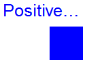
Connectors PositivePin and NegativePin are nearly identical. The only difference is that the icons are different in order to identify more easily the pins of a component. Usually, connector PositivePin is used for the positive and connector NegativePin for the negative pin of an electrical component.
| Type | Name | Description |
|---|---|---|
| Voltage | v | Potential at the pin [V] |
| flow Current | i | Current flowing into the pin [A] |
connector PositivePin "Positive pin of an electric component" Modelica.SIunits.Voltage v "Potential at the pin"; flow Modelica.SIunits.Current i "Current flowing into the pin";end PositivePin;
 Modelica.Electrical.Analog.Interfaces.NegativePin
Modelica.Electrical.Analog.Interfaces.NegativePin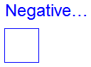
Connectors PositivePin and NegativePin are nearly identical. The only difference is that the icons are different in order to identify more easily the pins of a component. Usually, connector PositivePin is used for the positive and connector NegativePin for the negative pin of an electrical component.
| Type | Name | Description |
|---|---|---|
| Voltage | v | Potential at the pin [V] |
| flow Current | i | Current flowing into the pin [A] |
connector NegativePin "Negative pin of an electric component" Modelica.SIunits.Voltage v "Potential at the pin"; flow Modelica.SIunits.Current i "Current flowing into the pin";end NegativePin;
 Modelica.Electrical.Analog.Interfaces.TwoPin
Modelica.Electrical.Analog.Interfaces.TwoPin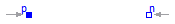
TwoPin is a partial model with two pins and one internal variable for the voltage over the two pins. Internal currents are not defined. It is intended to be used in cases where the model which inherits TwoPin is composed by combining other components graphically, not by equations.
| Type | Name | Description |
|---|---|---|
| PositivePin | p | Positive pin Positive pin (potential p.v > n.v for positive voltage drop v) |
| NegativePin | n | Negative pin |
partial model TwoPin "Component with two electrical pins" SI.Voltage v "Voltage drop between the two pins (= p.v - n.v)";PositivePin p "Positive pin Positive pin (potential p.v > n.v for positive voltage drop v)"; NegativePin n "Negative pin"; equation v = p.v - n.v;end TwoPin;
Modelica.Electrical.Analog.Interfaces.OnePort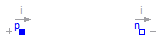
Superclass of elements which have two electrical pins: the positive pin connector p, and the negative pin connector n. It is assumed that the current flowing into pin p is identical to the current flowing out of pin n. This current is provided explicitly as current i.
| Type | Name | Description |
|---|---|---|
| PositivePin | p | Positive pin (potential p.v > n.v for positive voltage drop v) |
| NegativePin | n | Negative pin |
partial model OnePort "Component with two electrical pins p and n and current i from p to n" SI.Voltage v "Voltage drop between the two pins (= p.v - n.v)"; SI.Current i "Current flowing from pin p to pin n";PositivePin p "Positive pin (potential p.v > n.v for positive voltage drop v)"; NegativePin n "Negative pin"; equation v = p.v - n.v; 0 = p.i + n.i; i = p.i;end OnePort;
 Modelica.Electrical.Analog.Interfaces.TwoPort
Modelica.Electrical.Analog.Interfaces.TwoPort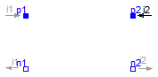
TwoPort is a partial model that consists of two ports. Like OnePort each port has two pins. It is assumed that the current flowing into the positive pin is identical to the current flowing out of pin n. This currents of each port are provided explicitly as currents i1 and i2, the voltages respectively as v1 and v2.
| Type | Name | Description |
|---|---|---|
| PositivePin | p1 | Positive pin of the left port (potential p1.v > n1.v for positive voltage drop v1) |
| NegativePin | n1 | Negative pin of the left port |
| PositivePin | p2 | Positive pin of the right port (potential p2.v > n2.v for positive voltage drop v2) |
| NegativePin | n2 | Negative pin of the right port |
partial model TwoPort "Component with two electrical ports, including current" SI.Voltage v1 "Voltage drop over the left port"; SI.Voltage v2 "Voltage drop over the right port"; SI.Current i1 "Current flowing from pos. to neg. pin of the left port"; SI.Current i2 "Current flowing from pos. to neg. pin of the right port";PositivePin p1 "Positive pin of the left port (potential p1.v > n1.v for positive voltage drop v1)"; NegativePin n1 "Negative pin of the left port"; PositivePin p2 "Positive pin of the right port (potential p2.v > n2.v for positive voltage drop v2)"; NegativePin n2 "Negative pin of the right port"; equation v1 = p1.v - n1.v; v2 = p2.v - n2.v; 0 = p1.i + n1.i; 0 = p2.i + n2.i; i1 = p1.i; i2 = p2.i;end TwoPort;
 Modelica.Electrical.Analog.Interfaces.ConditionalHeatPort
Modelica.Electrical.Analog.Interfaces.ConditionalHeatPort

This partial model provides a conditional heating port for the connection to a thermal network.
If this model is used, the loss power has to be provided by an equation in the model which inherits from ConditionalHeatingPort model (lossPower = ...). As device temperature T_heatPort can be used to describe the influence of the device temperature on the model behaviour.
| Type | Name | Default | Description |
|---|---|---|---|
| Boolean | useHeatPort | false | =true, if HeatPort is enabled |
| Temperature | T | 293.15 | Fixed device temperature if useHeatPort = false [K] |
| Type | Name | Description |
|---|---|---|
| HeatPort_a | heatPort |
partial model ConditionalHeatPort
"Partial model to include a conditional HeatPort in order to describe the power loss via a thermal network"
parameter Boolean useHeatPort = false "=true, if HeatPort is enabled";
parameter Modelica.SIunits.Temperature T=293.15
"Fixed device temperature if useHeatPort = false";
Modelica.Thermal.HeatTransfer.Interfaces.HeatPort_a heatPort(T(start=T)=T_heatPort, Q_flow=-LossPower) if useHeatPort;
Modelica.SIunits.Power LossPower "Loss power leaving component via HeatPort";
Modelica.SIunits.Temperature T_heatPort "Temperature of HeatPort";
equation
if not useHeatPort then
T_heatPort = T;
end if;
end ConditionalHeatPort;
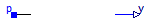
The AbsoluteSensor is a partial model for converting values that can be calculated from one pin connector into a real valued signal. The special calculation has to be described in the model which inherits the AbsoluteSensor. It is often used in sensor devices. To be a true sensor the modeller has to take care that the sensor model does not influence the electrical behavior to be measured.
Extends from Modelica.Icons.RotationalSensor (Icon representing a round measurement device).
| Type | Name | Description |
|---|---|---|
| PositivePin | p | Pin to be measured |
| output RealOutput | y | Measured quantity as Real output signal |
partial model AbsoluteSensor "Base class to measure the absolute value of a pin variable" extends Modelica.Icons.RotationalSensor;Interfaces.PositivePin p "Pin to be measured"; Modelica.Blocks.Interfaces.RealOutput y "Measured quantity as Real output signal"; end AbsoluteSensor;
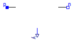
The RelaticeSensor is a partial model for converting values that can be calculated from two pin connectors into a real valued signal. The special calculation has to be described in the model which inherits the RelativeSensor. It is often used in sensor devices. To be a true sensor the modeller has to take care that the sensor model does not influence the electrical behavior to be measured.
Extends from Modelica.Icons.RotationalSensor (Icon representing a round measurement device).
| Type | Name | Description |
|---|---|---|
| PositivePin | p | Positive pin |
| NegativePin | n | Negative pin |
| output RealOutput | y | Measured quantity as Real output signal |
partial model RelativeSensor "Base class to measure a relative variable between two pins" extends Modelica.Icons.RotationalSensor;Interfaces.PositivePin p "Positive pin"; Interfaces.NegativePin n "Negative pin"; Modelica.Blocks.Interfaces.RealOutput y "Measured quantity as Real output signal"; end RelativeSensor;
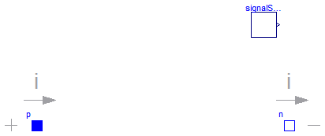
The VoltageSource partial model prepares voltage sources by providing the pins, and the offset and startTime parameters, which are the same at all voltage sources. The source behavior is taken from Modelica.Blocks signal sources by inheritance and usage of the replacable possibilities.
Extends from OnePort (Component with two electrical pins p and n and current i from p to n).
| Type | Name | Default | Description |
|---|---|---|---|
| Voltage | offset | 0 | Voltage offset [V] |
| Time | startTime | 0 | Time offset [s] |
| SignalSource | signalSource | redeclare Modelica.Blocks.In... |
| Type | Name | Description |
|---|---|---|
| PositivePin | p | Positive pin (potential p.v > n.v for positive voltage drop v) |
| NegativePin | n | Negative pin |
partial model VoltageSource "Interface for voltage sources" extends OnePort; parameter SI.Voltage offset=0 "Voltage offset"; parameter SI.Time startTime=0 "Time offset";replaceable Modelica.Blocks.Interfaces.SignalSource signalSource( final offset = offset, final startTime=startTime); equation v = signalSource.y;end VoltageSource;
 Modelica.Electrical.Analog.Interfaces.CurrentSource
Modelica.Electrical.Analog.Interfaces.CurrentSource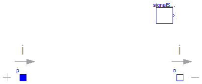
The CurrentSource partial model prepares current sources by providing the pins, and the offset and startTime parameters, which are the same at all current sources. The source behavior is taken from Modelica.Blocks signal sources by inheritance and usage of the replacable possibilities.
Extends from OnePort (Component with two electrical pins p and n and current i from p to n).
| Type | Name | Default | Description |
|---|---|---|---|
| Current | offset | 0 | Current offset [A] |
| Time | startTime | 0 | Time offset [s] |
| SignalSource | signalSource | redeclare Modelica.Blocks.In... |
| Type | Name | Description |
|---|---|---|
| PositivePin | p | Positive pin (potential p.v > n.v for positive voltage drop v) |
| NegativePin | n | Negative pin |
partial model CurrentSource "Interface for current sources" extends OnePort; parameter SI.Current offset=0 "Current offset"; parameter SI.Time startTime=0 "Time offset";replaceable Modelica.Blocks.Interfaces.SignalSource signalSource( final offset = offset, final startTime=startTime); equation i = signalSource.y;end CurrentSource;